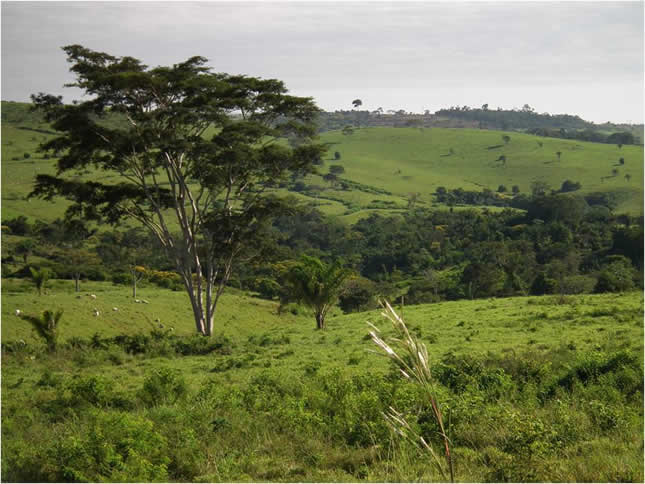
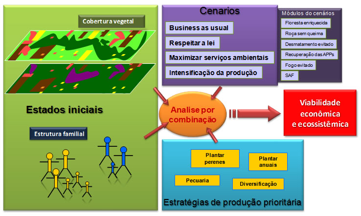
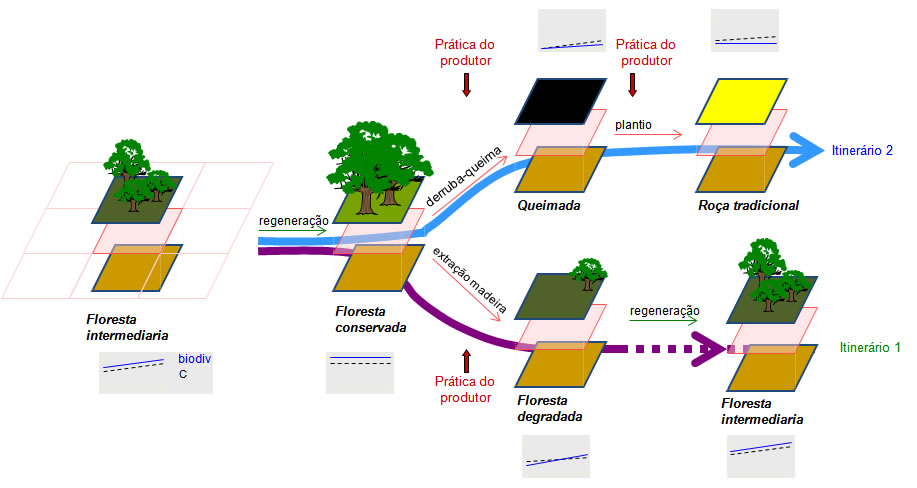

|
Amaz
Comparing different strategies of land use and
their consequences in terms of
|
 |
|
Amaz is an Agent-Based Model (ABM) which objective is to assess scenarios associated with the Crop-Livestock-Forest integration in the Amazon. The different scenarios allow comparing different strategies of land use and the consequences in terms of Environmental Services. The indicators of comparison aim at weigh up the different ways to:
- Reduce the environmental impacts of agricultural activities;
- Preserve riparian forests and legal reserves;
- Restore degraded areas, creating conditions for new production and decreasing the need for deforestation of new areas;
- Creating jobs, income, and better conditions to family farms.
Designed to operate at the farm level, the goal of Amaz is to evaluate the consequences of various forms of land use. From a given initial state, the producers apply their agricultural practices, leading to different forms of landscape.
Focused on the practices (“business as usual” and new practices designed in the project), we compare various land use strategies.
We define four scenarios to be compared:
These scenarios are compared by applying for each one, four land use strategies corresponding to four types of actors. Each type prefers a management pattern as follows:
A scenario is designed as a set of modules inserted into basic activities and that will affect the practices. These modules are:
Scenarios 0 are a set of "control" scenarios. For those, there is neither legal restriction, nor payment for Environmental Services.
Scenarios 1, "Respect the law" Modules 6 and 7
Calculation of environmental liabilities and creating a recovery plan (30 years to recover the liability) based on the module 6 (bare fallow) when above the limit of the legal reserve (LR) and when the area of permanent protection (APP, defined by IBAMA, the Brazilian Institute of the Environment). If below the limit, the agent can deforest without exceeding 50% of deforestation, and without clearing the APPs.
Implementation of module 7: the agent stops the use of fire to clear its pastures, but it authorized to slash and burn out of the legal reserve.
Scenarios 3: "Maximize the intensification of production." Modules 1, 2, 5 and 7 (Not yet implemented)

The principle of Amaz is crossing two dynamics: the natural evolution of the vegetation (and soil) over time, and the activities of the producer managing its farm. Thus, depending on the initial state and the producer practices, the system evolves in a direction that can be measured by ecological and economic indicators. For example, we measure the area of forest or its fragmentation, the biodiversity and the biomass (Carbon), but also the familys income, the number of days worked out, amount of hired labor, ...

Visit the description page to get a full description of Amaz.
Visit the Results page to see the main results of Amaz.
You can download the Cormas model source code.
A quite similar report in portugues is available.
For more information, contact the corresponding author